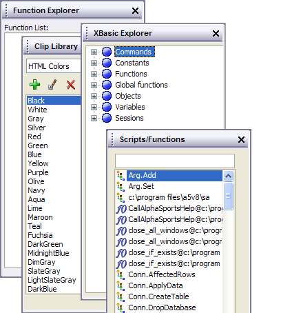

Using the Xbasic Code Editor
You write Xbasic scripts in the Code Editor. The Code Editor is a multi-tabbed window that lets you edit multiple scripts at the same time. The Code Editor always includes at least one tab called the Interactive window where you can test individual lines of Xbasic code and see immediate results.
The Code Editor lets you write scripts in two ways. You can use the graphical Action Scripting method, or you can type in Xbasic commands. For more information on Action Scripting, see the Introduction to Action Scripting.
|
How to indent and outdent single or multiple lines of code. | |
|
Auto-completion helps you with the syntax and arguments of functions and methods. | |
|
The Code Editor includes a format command that formats all code. The function converts all language elements to uppercase and indents the code. | |
|
Bubble help makes it easier to find functions and understand what arguments they require. | |
|
Alpha Five examines your script or function and reports the line number of the first syntax error that it finds. | |
|
The Code Library is a dockable toolbar that stores and organizes an unlimited number of Xbasic and Xdialog code snippets, retrieving and inserting them into your project with just a couple of keystrokes. | |
|
Color coding makes Xbasic scripts easier to read and understand. In addition, you can customize the colors that the editor displays. | |
|
How to combine multiple commands on a single line. | |
|
How to continue a long line of code over multiple lines. | |
|
Bookmarks allow you to quickly move the cursor to a location in a script or function. | |
|
Email a script or function as an attachment. | |
|
Search an entire script or just selected text, forward or backward, for whole words, and with case sensitivity. | |
|
Find variables that have not been dimmed, generate the correct DIM expression, and paste the resulting code into your script. | |
|
The Global Search of Scripts and Functions dialog box allows you to search for text in any one of your scripts or functions. | |
|
When using the Code Editor this command repositions the cursor to the referenced function. | |
|
The Insert Image dialog box allows you to insert the name of any embedded image into your script or function. | |
|
The Function Finder helps you to find the right function and then insert that function into your script. | |
|
The Insert Field dialog box allows you to inspect the characteristics of any field in any table and insert a fully qualified reference to a field into your script or function. | |
|
The Select Color dialog box allows you to insert the name of any Alpha Five color into your script or function. | |
|
The Insert Key Codes dialog box generates the code sequences needed to represent control keystrokes on the keyboard. | |
|
Comments make code easier to understand and maintain. | |
|
Select any number of contiguous lines in the editor and reverse their order. | |
|
Turn line numbering in the Code Editor on and off. | |
|
The Code Editor lets you edit multiple scripts simultaneously. You can have up to 15 Xbasic Scripts, Functions, or Action Scripts open at the same time. | |
|
How to start using the Code Editor. | |
|
Control access to a script or function by assigning it a password. | |
|
Print a script or function. | |
|
Remove blank lines from any portion of your script or function. | |
|
Rename or duplicate a script or function. | |
|
The Set Relationship Between Tables dialog box generates the Xbasic code necessary to open a parent and child table in a set relationship. | |
|
When using the Interactive window, set and read the variables of another window. | |
|
When using the Code Editor this command displays the referenced function in a separate window. | |
|
Sort any contiguous group of lines in ascending or descending order. | |
|
Track your location in a script by function name and line number. | |
|
Create an expression that transforms or reformats any group of lines in your script or function. | |
|
Save a script or function as a text file or import a script or function from a text file. | |
|
The ADO Record Set Genie allows you to create an Xdialog form that is bound to an ADO data source. The Xdialog form will allow you to view, edit, delete, and enter records. | |
|
The Button Genie generates all the Xdialog code for a button. | |
|
When you want to see the result of an Xbasic method, command or expression immediately, you can type an Xbasic statement directly into Alpha Five's Interactive window. | |
|
The OLE Automation Object Browser allows you to investigate the properties, methods, events, and constants of ActiveX controls and then copy values back to your script. | |
|
The Script Debugger allows the programmer to step through an Xbasic script or function and watch as Alpha Five executes each line. You can selectively debug only portions of your code, set breakpoints, and examine the values of variables. | |
|
The Script Navigator is a floating toolbar that shows a list of the functions that have been declared in the script and lets you quickly navigate, within the script, to a particular function. | |
|
The Static Text Genie makes the process of creating sophisticated and attractive Xdialog forms easier, faster, and more reliable by generating properly formatted Xdialog code for static text. | |
|
The Style Editor generates HTML style attribute codes. | |
|
When you are developing and debugging scripts, the Trace Window displays detailed warning and error messages which would otherwise be too long or numerous for display in a dialog box. | |
|
The Xbasic Explorer is a complete reference of all of the commands, functions, methods, properties and constants in the Xbasic language. | |
|
The Xbasic Script Genie generates the Xbasic code associated with the library of Action Scripting actions. The result of the process is code that is ready to be copied and pasted into your script or function. | |
|
The Webform Style Builder allows you to edit and create cascading style sheets. | |

Creating a New Script or Function
There are several ways to open the Code Editor :
Display the Code tab of the Control Panel, then select View > Code Editor.
The Code Editor appears. When the Code Editor opens, only the Interactive window is shown. To create a new script or function, click the appropriate button on the toolbar:
The button creates a new script using the Xbasic Editor.
The
 button
creates a new script using the Action Scripting Editor.
button
creates a new script using the Action Scripting Editor.The button creates a new function using the Xbasic Editor.
Alternatively, you can click the Code tab on the Control Panel, click the New button, and select Interactive Window, Script, or Function.
The Scripts menu on forms and browses let you design and execute scripts without switching to the Control Panel. Creating a new script gives you the option of using Action Scripting or Xbasic.
If you wish to open both the Code Editor and an existing script at the same time.
|
Method |
Procedure |
|
1 |
|
|
2 |
|
|
3 |
|
|
4 |
|
|
The Code Editor lets you edit multiple scripts simultaneously. You can have up to 15 Xbasic Scripts, Functions, or Action Scripts open at the same time. The Code Editor is re-sizeable, and Alpha Five remembers its size and position every time you open it.
When you type in the Code Editor, the Alpha Five auto-completion logic displays a list of functions or methods starting with the characters you have typed. You can then press Enter to have Alpha Five fill in the command. The Alpha Five auto-completion logic and Bubble Help make typing Xbasic commands and functions much easier because whenever a table name, field name, index name, or constant are required, you can simply right-click on the Bubble Help, and Alpha Five displays a list of all of the parameters from which you can select. Also, after you have declared a variable, Alpha Five shows all the variable names, making it less likely that you will introduce an error by transposing a letter while typing a variable name in a script.
The Code Editor provides extensive context-sensitive bubble-help as you type. This bubble-help is an invaluable aid in showing you the list of available methods, functions and properties, and in showing you the syntax for any particular function or method that you select.
For example, as you begin typing, the bubble-help pops up with available choices. The list of available choices is narrowed as you type. In the picture below, Alpha Five shows the functions that start with "loo".
To accept an entry from the bubble-help, use the down arrow to highlight an entry and then press Enter, or simply click the mouse on the selection that you want.
TIP: You can configure Alpha Five to use a Tab key rather than the Enter key to accept a bubble-help entry. Select the View > Settings command and navigate to the Auto-Help category.
Once you have selected a function or method, bubble-help will help you with the syntax of the function or method by prompting for each argument. For example, in the picture below, Alpha Five shows that the first argument for the LOOKUP() function is "tablename".
Many of the argument prompts allow you to right click on the argument name (or press Control-Down ) to get a list of choices. For example, in the picture below, right clicking on the "tablename" argument gives a list of tables in the current database.

Locally defined functions are also included in the auto-completion feature. For example, if you are writing a script and you define several functions in the script, Alpha Five will list all of the locally-defined functions, in addition to global functions and system functions.
Adding and Removing Code Indents
You can indent code by selecting one or more lines and clicking TAB. You can remove an indent level by selecting one or more lines and clicking SHIFT + TAB. The same functions are found on the right click menu.
Pressing CTRL-LEFT will move the cursor by a word to the left, and pressing CTRL-RIGHT will move the cursor by a word to the right.
You can add comments to a script to clarify and explain its operations. A comment must be preceded by the single quote (') comment marker. All text on a program line that follows the comment marker is part of the comment. A comment can appear either on a line by itself or at the end of a line shared with program code. For example, the following script has two comments:
|
' This script will count from 1 to 10. for i = 1 to 10 trace.writelni? 'prints the number in the Trace window next i |
You create a bookmark by putting in a special comment that looks like this. Note that there must not be any space characters after '// .
|
'//My Bookmark |
After opening a script, you can move to a bookmark by selecting Edit > Goto. Select the Goto tab, select the bookmark from the drop down list, and click Goto.
Combining Commands on a Single Line
You can combine multiple commands on a single line by separating each command with a semi-colon. This is particular useful in the Interactive window. For example, to test the previous example, you could enter the following code in the Interactive window:
|
for i = 1 to 10 ; trace.writelni?; next i |
Continuing a Command on a Second Line
You can continue a command onto a second line by ending the line with the continuation character, a backslash (.e.g.).
For example:
|
ui_msg_box("Test of Message Box", "This is the text of \ the message box") |
Xbasic scripts are color coded. This makes them easier to read, and it helps you spot errors. For example, as shown in the picture below, function names are shown in green, comments are shown in blue, commands to declare variables are shown in purple, constant values (i.e. text values) are shown in gray etc.

When a script has been edited, but has not yet been saved, an asterisk appears next to the script name on its tab.
The Code Editor contains four dockable panels that are initially located at the right side of the window. These are:
Xbasic Explorer - allows you to examine the properties of Alpha Five and your application
Code Library - organizes, stores, and inserts code elements into your scripts and functions
Function Explorer - helps you to navigate to a function within the current script
Scripts/Functions - helps you to find and open a script or function within your application

The status bar at the bottom of the Code Editor window is customizable. Features of the status bar include:
User customizable layout ( View > Settings > Preferences > Script Editor > Statusbar ). Refer to Status Bar Editor.
Display of the name of current function (if any) that you are editing
The ability to jump to any line number in the script.
A pop-up menu showing all functions in the current script. Select a function to navigate to the function.
See Also